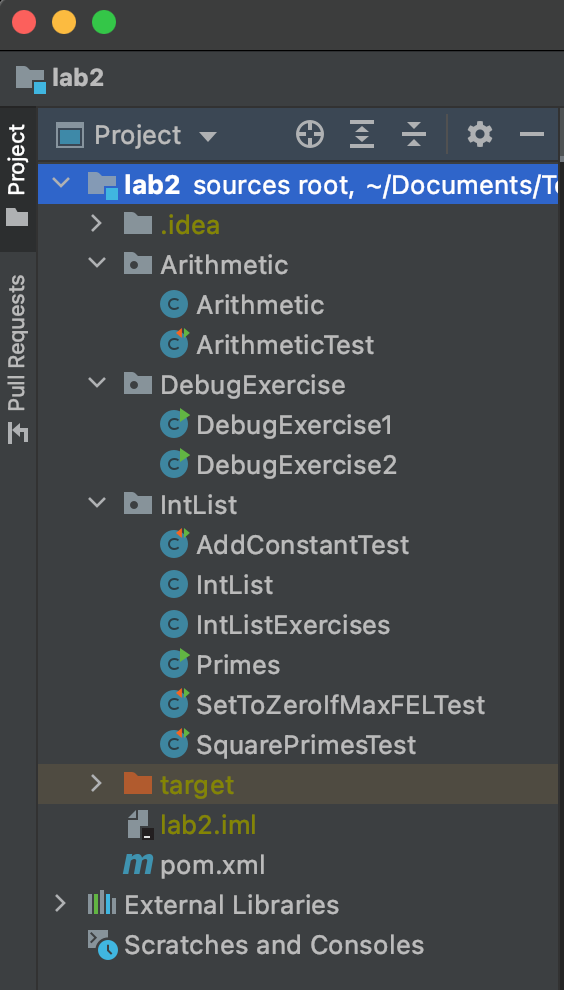
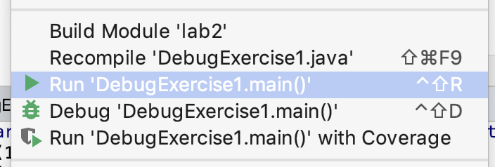
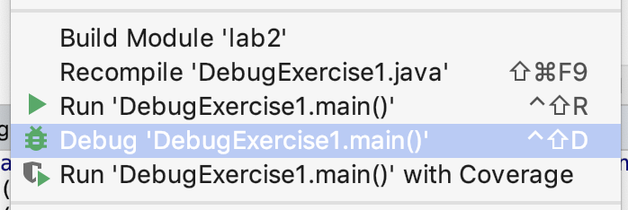
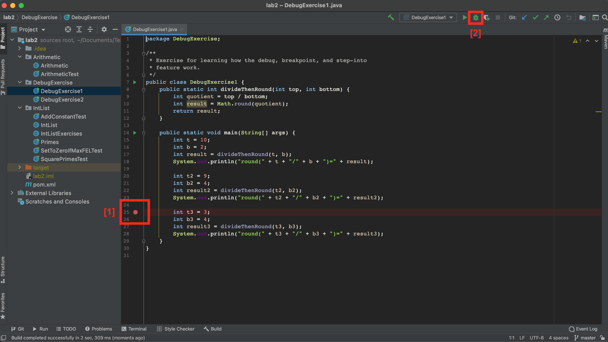
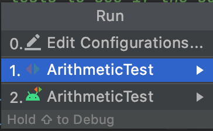
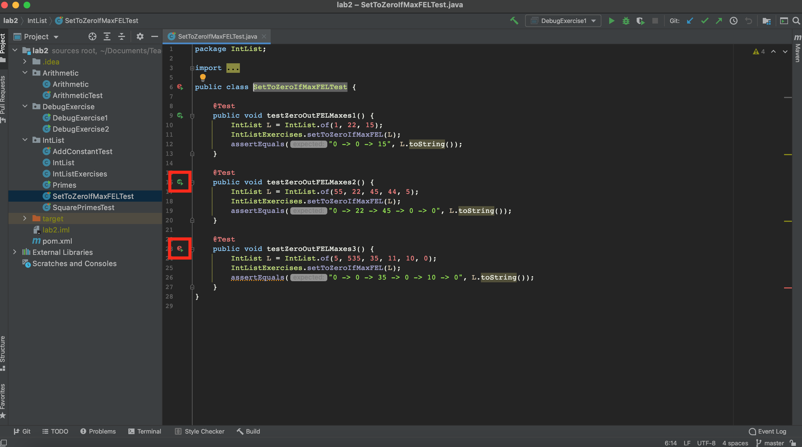
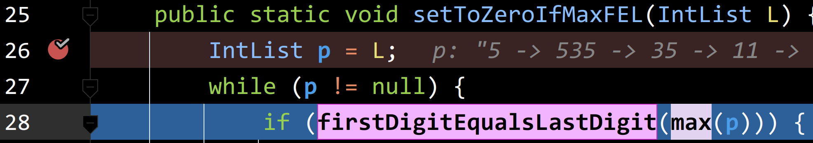

- Pre-lab
- Introduction
- Debugger Basics
- JUnit and Unit Testing
- Running JUnit Tests in IntelliJ (or another IDE)
- Application: IntLists
- Submission
- Full Recap
- FAQ and Common Issues
Pre-lab
- Lab 2 Setup
- Run
git pull skeleton masterin your repo. You should get alab2/folder.
Introduction
In this lab, you will learn about how to use the IntelliJ debugger and how to use JUnit tests in IntelliJ.
Debugger Basics
Repeat the “Project Setup” process from lab 2 setup. However, this time, you should “open or import” the lab2/pom.xml file instead of the lab2setup/pom.xml file.
After importing, your IntelliJ should look something like the following: 
Breakpoints and Step Into
We’ll start by running the main method in DebugExercise1. Open up this file in IntelliJ and click the run button. You should see three statements printed to the console, one of which should strike you as incorrect. If you’re not sure how to run DebugExercise1, right click on it in the list of files and click the Run DebugExercise1.main button as shown below:

Somewhere in our code there is a bug, but don’t go carefully reading the code for it! While you might be able to spot this particular bug, often bugs are nearly impossible to see without actually trying to run the code and probe what’s going on as it executes.
Many of you have had lots of experience with using print statements to probe what a program is thinking as it runs. While print statements can be very useful for debugging, they have a few disadvantages:
- They require you to modify your code (to add print statements).
- They require you to explicitly state what you want to know (since you have to say precisely what you want to print).
- And they provide their results in a format that can be hard to read, since it’s just a big blob of text in the execution window.
Often (but not always) it takes less time and mental effort to find a bug if you use a debugger. The IntelliJ debugger allows you to pause the code in the middle of execution, step the code line by line, and even visualize the organization of complex data structures like linked lists.
While they are powerful, debuggers have to be used properly to gain any advantage. We encourage you to do what one might call “scientific debugging”, that is, debugging by using something quite similar to the scientific method!
Generally speaking, you should formulate hypotheses about how segments of your code should behave, and then use the debugger to resolve whether those hypotheses are true. With each new piece of evidence, you will refine your hypotheses, until finally, you cannot help but stumble right into the bug.
Our first exercise introduces us to two of our core tools, the breakpoint and the
step over button. In the left-hand Project view, right click (or two finger click) on the
DebugExercise1 file and this time select the Debug option rather than the Run option. If the
Debug option doesn’t appear, it’s because you didn’t properly import your lab2
project (see the instructions in lab2setup).

You’ll see that the program simply runs again, with no apparent difference! That’s because we haven’t give the debugger anything interesting to do. Let’s fix that by “setting a breakpoint”. To do so, scroll to the line that says int t3 = 3;, then click just to the right of the line number. You should see a red dot appear that vaguely resembles a stop sign, which means we have now set a breakpoint. If we run the program in debug mode again it’ll stop at that line. If you’d prefer to avoid right-clicking to run your program again, you can click the bug icon in the top right of the screen instead. An animated gif showing off the steps in this paragraph (from a previous semester) is available at this link.

If the text console (that says things like “round(10/2)”) does not appear when you click the debug button, you may need to perform one additional step before proceeding. At the top left of the information window in the bottom panel, you should see tabs labeled “Debugger” and “Console” (and “Java Visualizer”). Click and drag the “Console” window to the far right of the bottom panel. This will allow you to show both the debugger and the console at the same time. An animated gif showing off this process (from a previous semester) is available at this link.
Once you’ve clicked the debug button (and made your console window visible if necessary), you should see that the program has paused at the line at which you set a breakpoint, and you should also see a list of all the variables at the bottom, including t, b, result, t2, b2, and result2. We can advance the program one step by clicking on the “step into” button, which is an arrow that points down as shown on the next line:
We’ll discuss the other buttons later in this lab. Make sure you’re pressing ‘step into’ rather than ‘step over’. Step-into points straight down, whereas step-over points up to the right and then down to the right.
Each time you click this button, the program will advance one step. Before you click each time, formulate a hypothesis about how the variables should change.
Note that the currently highlighted line is the line that is about to execute, not the line that has just executed.
Repeat this process until you find a line where the result does not match your expectations or the expectations of the person who wrote the code. Try and figure out why the line doesn’t do what you expect. If you miss the bug the first time, click the stop button (red square), and then the debug button to start back over. Optionally, you may fix the bug once you’ve found it.
Step Over and Step Out
Just as we rely on layering abstractions to construct and compose programs, we should also rely on abstraction to debug our programs. The “step over” button in IntelliJ makes this possible. Whereas the “step into” from the previous exercise shows the literal next step of the program, the “step over” button allows us to complete a function call without showing the function executing.
The main method in DebugExercise2 is supposed to take two arrays, compute the element-wise max of those two arrays, and then sum the resulting maxes. For example, suppose the two arrays are {2, 0, 10, 14} and {-5, 5, 20, 30}. The element-wise max is {2, 5, 20, 30}, e.g. in the second position, the larger of “0” and “5” is 5. The sum of this element-wise max is 2 + 5 + 20 + 30 = 57.
There are two different bugs in the provided code. Your job for this exercise is to fix the two bugs, with one special rule: You should NOT step into the max or add functions or even try to understand them. These are very strange functions that use syntax (and bad style) to do easy tasks in an incredibly obtuse way. If you find yourself accidentally stepping into one of these two functions, use the “step out” button (an upwards pointing arrow) to escape.
Even without stepping INTO these functions, you should be able to tell whether they have a bug or not. That’s the glory of abstraction! Even if I don’t know how a fish works at a molecular level, there are some cases where I can clearly tell that a fish is dead.
If you find that one of these functions has a bug, you should completely rewrite it rather than trying to fix it.
Now that we’ve told you what “step over” does, try exploring how it works exactly and try to find the two bugs. If you’re having the issue that the using run (or debug) button in the top right keeps running DebugExercise1, right click on DebugExercise2 to run it instead.
If you get stuck or just want more guidance, read the directions below.
Further Guidance (for those who want it)
To start, try running the program. The main method will compute and print an answer to the console. Try manually computing the answer, and you’ll see that the printed answer is incorrect. If you don’t know how to manually compute the answer, reread the description of what the function is supposed to do above, or read the comments in the provided code.
Next, set a breakpoint to the line in main that calls sumOfElementwiseMaxes. Then use the debug button, followed by the step-into function to reach the first line of sumOfElementWiseMaxes. Then use the “step over” button on the line that calls arrayMax. What is wrong with the output (if anything), i.e. how does it fail to match your expectations? Note that to see the contents of an array, you may need to click the rightward pointing triangle next to the variable name in the variables tab of the debugger window in the bottom panel.
If you feel that there is a bug, step into arrayMax (instead of over it) and try to find the bug. Reminder: do not step into max. You should be able to tell if max has a bug using step over. If max has a bug, replace it completely.
Repeat the same process with arraySum and add. Once you’ve fixed both bugs, double check that the sumOfElementwiseMaxes method works correctly for the provided inputs. Note: This is not proof that sumOfElementwiseMaxes is correct, but it’s not necessary to write any additional tests to help verify this fact (that will be coming next week).
Recap: Debugging
By this point you should understand the following tools:
- Breakpoints
- Stepping over
- Stepping into
- Stepping out (though you might not have actually used this feature for this lab)
However, this is simply scratching the surface of the features of the debugger! Feel free to experiment. For example you might try to figure out what the “Watches” tab does. Another handy feature we won’t cover is the “Evaluate Expression” button (one of the last buttons on the row of step into/over/out buttons – it looks like a calculator). In Lab 3 and 4, we will also show off some additional debugger features.
Be sure to also check out our Debugging Guide! It discusses some features that were not covered in this lab (e.g. conditional breakpoints), but is still a great overview of debugging if you need it!
JUnit and Unit Testing
We now turn our attention to JUnit and Unit Testing, which were covered in lecture 3.
Unit Testing is a great way to rigorously test each method of your code and ultimately ensure that you have a working project.
The “Unit” part of Unit Testing comes from the idea that you can break your program down into units, or the smallest testable part of an application. Therefore, Unit Testing enforces good code structure (each method should only do “One Thing”), and allows you to consider all of the edge cases for each method and test for them individually.
In this class, you will be using JUnit to create and run tests on your code to ensure its correctness. And when JUnit tests fail, you will have an excellent starting point for debugging. Furthermore, if you have some terrible bug that is hard to fix, you can use git to revert back to a state when your code was working properly according to the JUnit tests (we’ll talk about how to revert your code to old versions when we get to lab 4).
JUnit Syntax
As discussed in lecture, JUnit tests are written in Java.
Open ArithmeticTest.java.
The first thing you’ll notice are the imports at the top (IntelliJ sometimes
shortens these to import ...; just click on the ... to expand this and
see what exactly is being imported). These imports are what give you easy
access to the JUnit methods and functionality that you’ll need to run JUnit
tests. For more information, see the Testing lecture video.
Next, you’ll see that there are two methods in ArithmeticTest.java:
testProduct and testSum. These methods follow this format:
@Test
public void testMethod() {
assertEquals(<expected>, <actual>);
}
assertEquals is a common method used in JUnit tests. It tests whether a
variable’s actual value is equivalent to its expected value.
When you create JUnit test files, you should precede each test method with a
@Test annotation, and can have one or more assertEquals or assertTrue
methods (provided by the JUnit library). All tests must be non-static.
This may seem weird since your tests don’t use instance variables and you
probably won’t instantiate the class. However, this is how the designers of
JUnit decided tests should be written, so we’ll go with it.
Running JUnit Tests in IntelliJ (or another IDE)
Note: If you’ve decided not to use IntelliJ, you are on your own when it comes to running JUnit tests. Staff are not trained for and will not provide support for students who want to use other IDEs or command line compilation and execution tools.
With ArithmeticTest.java open, click the Run... option under the Run
menu at the top of IntelliJ as shown in the following screenshot.

After clicking “Run…”, you should see some number of options that will look something like the list below. The number of items in your list may vary.

The option we care about is the one that says “ArithmeticTest” next to the red and green arrows (next to the 1. in the image above).
Select this one, and you should see something like:

This is saying that the test on line 25 of ArithmeticTest.java failed. The test
expected 5 + 6 to be 11, but the Arithmetic class claims 5 + 6 is 30. You’ll
see that even though testSum includes many assert statements, only one
failure is shown.
This is because JUnit tests are short-circuiting – as soon as one of the asserts in a method fails, it will output the failure and move on to the next test.
Try clicking on the ArithmeticTest.java:27 in the window at the bottom of the
screen and IntelliJ will take you straight to the line which caused the test to
fail. This can come in handy when running your own tests on later projects.
Now fix the bug, either by inspecting Arithmetic.java and finding the bug, or
using the IntelliJ debugger to step through the code until you reach the bug.
After fixing the bug, rerun the test, and if you’re using the default renderer, you should get a nice glorious green bar. Enjoy the rush.
Application: IntLists
As discussed in Monday’s lecture, an IntList is our CS61B implementation for a
naked recursive linked list of integers. Each IntList has a first and rest variable. The first is
the int element contained by the node, and the rest is the next chain in the
list (another IntList!).
We have created a file IntListExercises.java that contains three methods, each of which are buggy. Your task in this section is to find and fix the bugs! To assist you, we’ve added some helpful starter code and test skeletons, which we explain below.
Starter Code
Added to our implementation in Monday’s lecture are two methods in the IntList class, print and of. The of method is a convenience method for creating IntLists. Here’s a quick demonstration of how it works. Consider the following code that you’ve seen in lecture for creating an IntList containing the elements 1, 2, and 3.
IntList lst = new IntList(1, new IntList(2, new IntList(3, null)));
That’s a lot of typing, and is quite confusing! The IntList.of method addresses this problem. To create an IntList containing the elements 1, 2, and 3, you can simply type:
IntList lst = IntList.of(1, 2, 3);
Isn’t that great?! It works for lists of any number of elements!
// Creates an empty list!
IntList empty = IntList.of();
// Creates an IntList one element, 7
IntList oneElem = IntList.of(7);
// Creates an IntList with many elements
IntList manyElems = IntList.of(5, 4, 3, 2, 1);
The other method print returns a String representation of an IntList.
IntList lst = IntList.of(1, 2, 3);
System.out.println(lst.toString())
// Output: 1 -> 2 -> 3
These methods don’t add any real functionality to the IntList class per-se, but they do provide convenient ways of creating and displaying IntLists, respectively. We use these convenience methods to make testing easier, and you will get some practice with these methods when you write your own JUnit test for debugging IntLists!
Part A: IntList Iteration
In this part, we will be debugging the addConstant method in IntListExercises.java. This method is intended to take in an IntList and mutatively add a constant to each element of the list.
/* Expected Behavior */
IntList lst = IntList.of(1, 2, 3);
addConstant(lst, 1);
System.out.println(lst.toString());
// Output: 2 -> 3 -> 4
addConstant(lst, 4);
System.out.println(lst.toString());
// Output: 6 -> 7 -> 8
Uh oh! The addConstant implementation we have provided in the starter code is buggy! We have provided three tests in AddConstantTest.java that can help you isolate the bug. These tests exercise the IntList.toString and IntList.of methods mentioned above! Step through each of these tests with the Java Debugger to help you isolate the bug. Once you’ve isolated the bug, fix it.
Part B: Nested Helper Methods and Refactoring for Debugging
In this part, we will be debugging the setToZeroIfMaxFEL method in IntListExercises.java.
This method performs a very strange task. Specifically, it replaces the value at a node in an IntList with 0 if (and only if) the max of the IntList starting at that node has the same first and last digit. Thus, in the method name FEL is an abbreviation for “first equals last”.
For example, if we pass the IntList 55 -> 22 -> 45 -> 44 -> 5 it will set the values 55, 44, and 5 to zero so that the list becomes 0 -> 22 -> 45 -> 0 -> 0. This is because:
- The IntList starting from 55 has max value 55, which has the same first and last digit, so this value is set to zero.
- The IntList starting from 22 has max value 45, which does not have the same first and last digit, so 22 is not changed.
- The IntList starting from 45 has max value 45, which does not have the same first and last digit, so 45 is not changed.
- The IntList starting from 44 has max value 44, which has the same first and last digit, so 44 is set to zero.
- The IntList starting from 5 has max value 5, which has the same first and last digit, so 5 is set to zero.
To test your understanding, consider the IntList 5 -> 535 -> 35 -> 11 -> 10 -> 0. What should be the list after calling setToZeroIfMaxFEL is called? Check our answer by looking at testZeroOutFELMaxes3 in SetToZeroIfMaxFELTest.
If you run the tests, you’ll see that the method is buggy. Specifically, test 3 fails.
Set a breakpoint on the first line of setToZeroIfMaxFEL and debug only testZeroOutFELMaxes3. You can debug a single test by opening SetToZeroIfMaxFELTest.java, locating the method testZeroOutFELMaxes3(), and clicking on the green arrow icon to the left of the method definition. If the test has already been run before, the green arrow icon may turn into a green checkmark coupled with the green arrow (if the test passed before) OR it may turn into a red exclamation mark coupled with a green arrow (if the test failed before). An example of the latter two cases is depicted below.

Use step-in a couple of times, which will take you to the line that says if (firstDigitEqualsLastDigit(max(p))). When you click step-in a third time, you’ll see both firstDigitEqualsLastDigit and max get highlighted, as shown below:

Since we have a nested function call, IntelliJ is asking us which function we’d like to step into. If you’d like, you can click on one or the other. If you click on max, you’ll see all the details of the call to max. If you click on firstDigitEqualsLastDigit, the call to max will get stepped-over.
Personally, I find code like this hard to debug! One tactic I use in circumstances like this is to refactor my code to make it more debugging friendly. Let’s try this out!
Change the code so that it looks like this:
int currentMax = max(p);
boolean firstEqualsLast = firstDigitEqualsLastDigit(currentMax);
if (firstEqualsLast) {
p.first = 0;
}
Now that you’ve done this, use the step-over feature to identify which call to max or firstDigitEqualsLastDigit is yielding the wrong answer. Important: Don’t use step-in until you’ve found a call to max or firstDigitEqualsLastDigit that yields the wrong answer. Otherwise you’re just wasting time running through every single line of code. That is, if you’re watching every single iteration of every single call of the max function, you’re not using the debugger properly!
Once you’ve found a call to max or firstDigitEqualsLastDigit that yields a weird result, start the debugging process over, and this time, when you get back to the argument that yielded the weird result, click step-in instead of step-out. Note: In Lab 4, we’ll talk about a useful idea known as a “conditional breakpoint” that will avoid the need to start back over from the beginning.
Once you’ve identified the bug, fix it. Also feel free to change the refactored code back into the one-line version i.e. if (firstDigitEqualsLastDigit(max(p))).
Note: In the real world, you would have ideally tested max and firstDigitEqualsLastDigit separately before using them in the setToZeroIfMaxFEL method.
Part C: Tricky IntLists!
In this part, we will be debugging the squarePrimes method in IntListExercises.java. This method is intended to take in an IntList, square all its prime elements, and leave the composite (not-prime) elements alone. It returns true if at least one of the elements got squared, and false otherwise.
As an example, consider an IntList containing the elements 14, 15, 16, 17, and 18. After running squarePrimes, we expect the prime element (17) to be squared and the composite elements (14, 15, 16, 18) to remain the same. The output of the squarePrimes function should true, since it should modify the IntList to become 14, 15, 16, 289, 18. In code:
/* Expected Behavior */
IntList lst = IntList.of(14, 15, 16, 17, 18);
System.out.println(lst.toString());
// Output: 14 -> 15 -> 16 -> 17 -> 18
boolean changed = squarePrimes(lst);
System.out.println(lst.toString());
// Output: 14 -> 15 -> 16 -> 289 -> 18
System.out.println(changed);
// Output: true
The squarePrimes method uses the function Primes.isPrime(int x) as a helper method. isPrime simply returns true if its argument is a prime number, and returns false if its argument is composite. You don’t have to worry about how it determines whether a number is prime or not – that’s rather complicated! (Optional: For the curious reader, check out the “Fermat Primality Test” online). Instead, we expect you to treat the isPrime function as a blackbox. While you are debugging, use the “Step Over” feature on the isPrime function. This will allow you to verify its inputs and outputs are correct without being concerned about its implementation.
We’ve explained what the squarePrimes method is supposed to do above. Unfortunately, the squarePrimes method is buggy. It’s your job to find and fix the bug! In order to do this, we recommend that you:
- Create JUnit Test(s) that test the
squarePrimesmethod over a variety of different inputs. Make sure to test that it makes updates to the passed-inIntListcorrectly and returns the correctbooleanvalue. - Once you’ve created a JUnit Test on which
squarePrimesfails, you’ve made progress! Woohoo! Now use the Java Debugger to step through the problem and isolate the bug. - Finally, write a fix to the bug. For this particular bug, the fix is not many lines of code. Finding the bug is much more difficult than fixing it!
To get you started on this task, we’ve created one JUnit Test for you, SquarePrimesTest.testSquarePrimesSimple. This method checks that the example we gave above (an IntList of 14, 15, 16, 17, and 18) is correctly modified by the squarePrimes function, and that the squarePrimes function returns the correct value (true in this case). Unfortunately this test passes: You’ll have to write another test that fails! You can use testSquarePrimesSimple as an example of how to write a JUnit Test. Good luck!
Submission
As before, push your code to GitHub and submit to Gradescope to test your code. One thing you’ll notice is that some of the tests are “Hidden”. This means that we don’t reveal to you what the test does, and if you fail the test, we give a purposefully vague error message. This is because for this lab, we want you to focus on learning how to debug by yourselves without relying on informative messages from the autograder.
Full Recap
In this lab, we went over:
- Stepping into, over, and out inside the IntelliJ debugger (this will be handy for projects!)
- Unit Testing (big picture)
- JUnit syntax and details
- Writing JUnit tests
- Debugging Using JUnit
- Running the Style Checker
FAQ and Common Issues
Things like String or String.equals() are red!
This is a JDK issue, go to File > Project Structure > Project > Project SDK to troubleshoot. If your Java version is 15.0, then you should have a 15.0 SDK and a Level 15 “Project Language Level”.